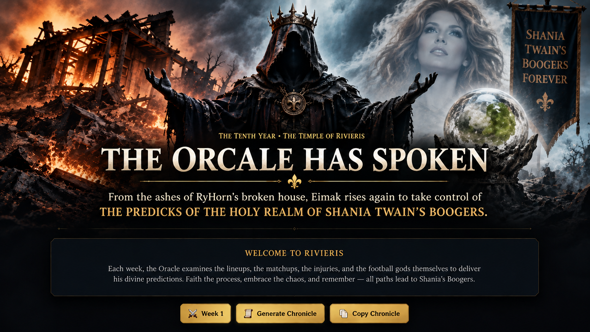

Week 1: The First Omen
From the ashes of RyHorn's broken house, Eimak rises again—reborn in smoke, prophecy, and holy mucus—to seize control of the PREDICKS OF THE HOLY REALM OF SHANIA TWAIN'S BOOGERS.
118–114 • Confidence 6/10
121–112 • Confidence 7/10
119–115 • Confidence 5/10
113–109 • Confidence 5/10 • Upset
116–110 • Confidence 6/10
114–112 • Confidence 4/10
Booger Eaters have the terrifying Lamar Jackson–Bijan Robinson foundation; both sit at or near the top of current Week 1 expert boards. But Baba Yaga counters with Jonathan Taylor, Ashton Jeanty, Garrett Wilson and a deeper middle of the lineup. Eimak sees Booger Eaters closing the ESPN gap, but not quite taking Nathan's crown on opening weekend.
Josh Allen and Jahmyr Gibbs form the strongest two-man opening punch on the slate. Gibbs is the consensus-type RB1 this week and Chris Olave draws one of the week's most attractive receiver environments. Nation still owns Derrick Henry and Justin Jefferson, but Drake Maye's road date in Seattle is a tougher opening assignment and Tee Higgins enters the week with an injury tag, even though current reporting says he is on pace to play.
This is a heavyweight fight. Jalen Hurts and Joe Burrow both sit among the elite Week 1 quarterback options, while Amon-Ra St. Brown and Ja'Marr Chase are both top-tier receiver plays. Eimak gives the smallest edge to Tuten because Hurts' rushing floor plus Omarion Hampton's favorable setup gives that side a little more insulation if one receiver disappoints.
Turtles have the explosive Justin Herbert–Jaxon Smith-Njigba pairing, and JSN is one of the week's highest-ranked receivers. But Malik Nabers' availability remains uncertain as he works back from his ACL injury. Dr. Alligator counters with James Cook, Kenneth Walker and Brock Bowers, whose red-zone role makes him one of the better touchdown bets at tight end. The Oracle smells the first upset of the year.
Christian McCaffrey returned to full participation and remains an elite Week 1 fantasy play. Add Dak Prescott, Trey McBride and a strong group of touchdown candidates and Shaving Ryans has the steadier profile. Bloody Weather can absolutely detonate through CeeDee Lamb and Chase Brown, but Eimak sees too many paths to points on the other side.
ESPN separates these teams by one tenth of a point, and Eimak agrees that chaos is coming. Your greatest ally has the monstrous Achane–Barkley backfield, but George Kittle is still working back from an Achilles injury and his Week 1 workload is uncertain. Homeless counters with Puka Nacua — the top-ranked receiver on several Week 1 boards — plus Jayden Daniels' rushing ceiling. One broken play decides it.
For ten seasons they had returned to Rivieris believing the ritual belonged to them. Twelve houses. Twelve banners. Twelve managers convinced that draft boards, waiver claims and Sunday panic were the forces that decided their fate.
They were wrong.
Deep beneath the Temple, where no commissioner had walked in years, Eimak opened his eyes.
The Oracle saw six battles. He saw Gibbs running through smoke. He saw an Alligator rise where the projections said it should sink. He saw Puka standing at the edge of a game separated by a fraction of a point. And above them all he saw the old champion, Nathan of Baba Yaga, seated comfortably upon the throne as though last season had granted him ownership of the future.
Eimak did not order the throne destroyed. Not yet.
Instead, he whispered a name into the stone beneath it.
Rivieris remembers.
Week 1 would begin as all revolutions begin: not with the blade, but with the first person realizing the king can bleed.
Analysis snapshot: September 9, 2026. The Oracle cross-checked ESPN lineup projections with current Week 1 rankings/projections from Draft Sharks, 4for4, DraftKings Network and FPTrack, plus current NFL/injury reporting.
Key reads: Lamar Jackson and Jalen Hurts rank at the top of current QB boards; Jahmyr Gibbs and Bijan Robinson sit at the top of RB boards; Puka Nacua, Jaxon Smith-Njigba, Ja'Marr Chase and Amon-Ra St. Brown are among the highest Week 1 WR projections. Current injury reporting says Ja'Marr Chase and Tee Higgins are on pace to play, George Kittle's Week 1 workload remains uncertain, and Malik Nabers' status remains a significant Week 1 variable.
Fantasy projections are estimates, not guarantees. The Oracle accepts no liability for cursed hamstrings, goal-line vultures or kickers missing from 34 yards.